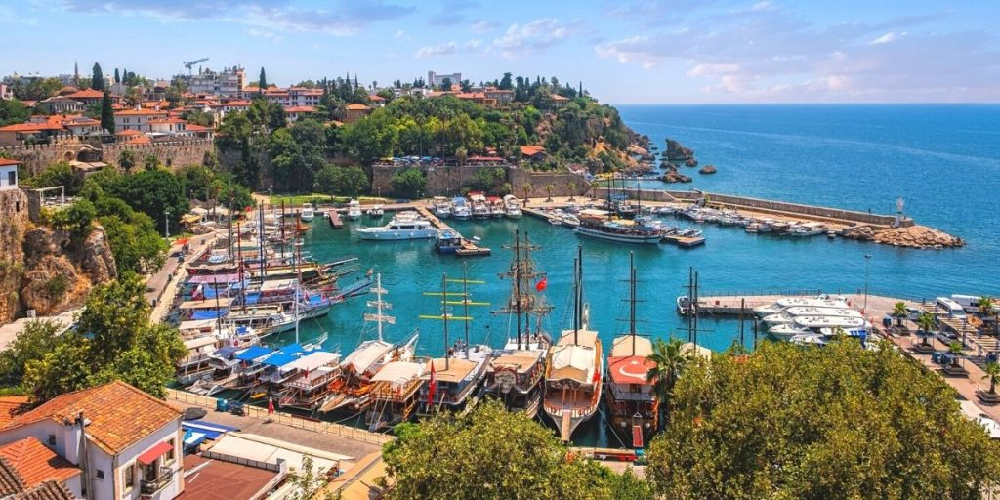
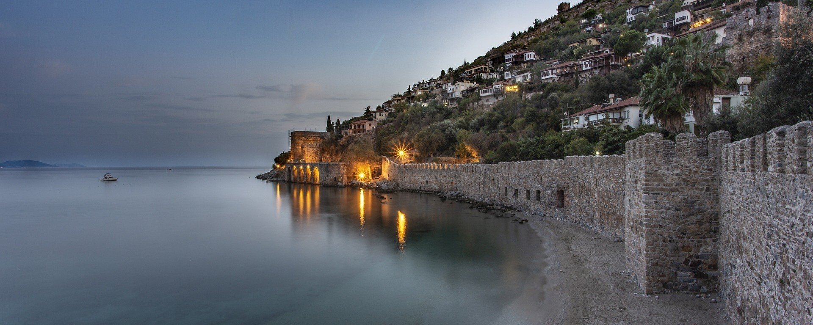

Стамбул
Стамбу́л (тур. İstanbul) — найбільше місто Туреччини та Європи, чотирнадцяте місто світу за кількістю населення[3] (станом на 2023 рік — 15,7 млн осіб). Важливий морський порт, великий промисловий та культурний центр Туреччини. Розташований на узбережжі Босфору, має велике міжнародне, історичне та культурне значення. Лінгос (дав.-гр. Λυγγος) — найперша відома назва міста. У 667 році до н. е. із заснуванням на його місці мегарської поселення вона отримала назву Візантій, а згодом Константинополь.
Розташування
Стамбул розташований у горбистій місцевості на північному заході Туреччини на обох берегах протоки Босфор, з півдня омивається Мармуровим морем. Основна частина міста розташована в Європі, менша в Азії. Європейська частина міста розділена бухтою Золотий Ріг. Площа міста — 1 538,77 км². Неподалік від Стамбула у Мармуровому морі розташовані Принцеві острови.
Кліматичні умови
Стамбул розташований у зоні помірного клімату. Зима холодна й волога. Температури навесні й восени помірні. Влітку погода дуже тепла й вогка. (Середня температура в січні — від +3 до 9 °C, у серпні — від 18 до 28 °C). Опадів — 870 мм на рік.[8] Зими дощові, з листопада по квітень випадає сніг, але він тримається трохи більше 4-5 днів. Град випадає частіше, ніж сніг, і переважно протягом осінніх та весняних місяців. Грози зазвичай трапляються навесні та влітку.Найнижча температура (−16.1 °C) була зафіксована 15 лютого 1927 року. Найвища температура (40.5 °C) була зафіксована 12 серпня 2000 року.
Визначні пам'ятки
Анталія
Велике туристичне місто-порт, п'яте за чисельністю населення місто Туреччини, столиця провінції Анталія. Розташована на південно-західному узбережжі Анатолії, біля гір Тавр, Анталія є найбільшим турецьким містом на узбережжі Середземного моря за межами Егейського регіону, де мешкає понад один мільйон людей. Популярний морський курорт серед українців.
Географія
Анталія має спекотно-літній середземноморський клімат (Köppen: Csa) або "вологий" сухий літній субтропічний клімат (Trewartha: Cf або "вологий Cs"). Має відчутно спекотне, сухе літо та м’яку, дощову зиму. У той час як дощові періоди звичайні і часто сильні взимку, Анталія дуже сонячна, з майже 3000 годин сонячного світла на рік. Найвища рекордно зафіксована температура повітря досягла 45,4 ° C 1 липня 2017 року, що зазвичай становить у середньому 34,4 ° C, а найнижчий зафіксований температурний рекорд становив -4,6 ° C у лютому, коли низький середній показник становить всього 6,1 ° C. Середня температура моря коливається від 16 ° C взимку до 27 ° C влітку.
Визначні пам'ятки
Аланія
Місто-курорт, за 120 км на південь від Анталії, великий морський порт та курорт який розміщений на узбережжі Середземного моря. Постійне населення міста становить трохи більше ніж 100 тис. осіб, проте в літньо-осінній сезон фактичне населення в кілька разів більше через великий наплив туристів.
Клімат
Завдяки теплому Середземному морю, дуже великій кількості сонячного світла, а також Таврським горам, які захищають від північних холодних вітрів, Аланія — одне з найспекотніших міст Туреччини. Середньорічна температура становить +20 °C (для порівняння, середньорічна температура Анталії — +17 °С, Ніцци — +16 °C). Клімат Аланії класифікується як субтропічний середземноморський.Зима відносно прохолодна, вітряна й дощова, а літо дуже спекотне, сухе і тривале. Вологість повітря, як і практично у всій провінції Анталія, досить висока, і майже цілий рік становить 55-65 %. Найтеплішим місяцем є серпень, влітку опади бувають рідко.
Визначні пам'ятки
- Візантійська фортеця ХІІІ ст.
- Кизил Куле (Червона Вежа)
- Сталактитова печера Дамлаташ
- Судноверф
- Пам'ятник Ататюрку і турецьким піонерам
- Пам'ятник Ала-Ад-Діну Кейкубада
- «Пляж Клеопатри»
- Археологічний музей Аланії з рідкісними підлоговими мозаїками 2 ст.н. е.
- Будинок-музей Ататюрка
- Річка Дим Чай і печера Дим
- Середньовічний караван-сарай Аларахан, побудований у VIII віці (район Авсаллар)
Ізмір

Ізмі́р (тур. İzmir[7]) — третє за кількістю населення (4 млн у 2013 р.) місто Туреччини і другий за величиною порт країни після Стамбула. Розташоване на березі Ізмірської затоки Егейського моря. Важливий торговельний та туристичний центр, місце розташування середземноморської штаб-квартири НАТО. Одне з найдавніших міст узбережжя Середземного моря, воно існувало за 3000 років до н. е. Це також один з найбільших центрів античної цивілізації.
Географія
Ізмір розташований в зоні підвищеної сейсмічної активності, дрібні, практично невідчутні поштовхи фіксуються в цьому регіоні декілька десятків разів на рік.
Місто оточує Ізмірську затоку з заходу, півночі та сходу. Гористий характер місцевості зумовлює нерівномірність річкових стоків: влітку більшість дрібних русел висихає майже ущент, навесні та влітку після великих дощів можливі повені. Наприклад, в 2010 р. вода затопила усю нижню частину міста, включно з престижним районом Алсанджак. Біля північно-західної околиці міста розташовані штучні затоки для випарювання морської солі, у наш час вони перетворені на заповідник, де охороняються рідкісні птахи, зокрема, фламінго
Практично усі міські квартали, за виключенням історичного центру, розташовані на схилах невисоких пагорбів, вкритих трав'янистою рослинністю і невисокими лісами. Більшість лісових насаджень штучні і представлені сосною. Серед інших рослин зустрічаються суничне дерево, кам'яний дуб, лавр, здичавілі фіги та оливи, мирт, олеандр. Через літні посухи ліси часто потерпають від пожеж.
Наслідком високого антропогенного навантаження є збіднілий тваринний світ. Великі звіри та птахи на околицях Ізміра не зафіксовані, проте на пагорбах можна часто зустріти черепах, ящірок, різноманітних мурах, джмелів, метеликів, богомолів, скорпіонів тощо. В Ізмірській затоці зимують качки, кулики.
Населення
Переважна більшість населення Ізміра — турки. Серед інших національностей у місті з давніх часів мешкають євреї, цигани, греки, вірмени. В Ізмірі частіше, ніж у інших містах Туреччини, можна зустріти англійців, французів, німців, італійців, проте вони не утворюють діаспор, а переважно є працівниками дипломатичних установ або власниками вілл у сусідньому курортному містечку Чешме.Домінуюча релігія в Ізмірі — іслам. Мечеті є в кожному кварталі. В місті також діють кілька синагог, 4 католицькі та 1 англіканська церква. Через міжконфесійне напруження більшість християнських церков закриті для вільного відвідування туристами.